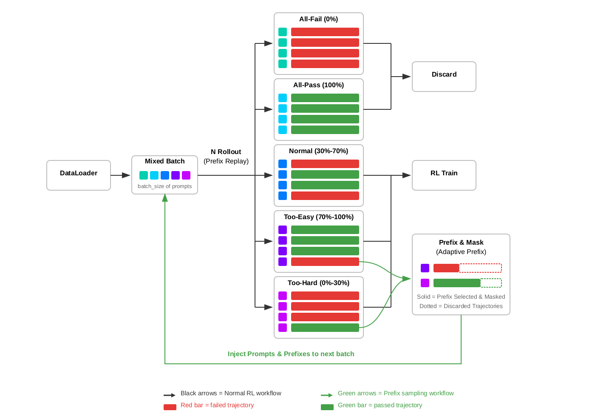

Prefix Sampling
Targeting 50% Rollout Pass Rate for More Efficient Agentic RL
Table of Contents
TL;DR
{kind=link}
{kind=link}
Figure 1. Left: Qwen3-14B SWE-bench Verified pass@1 score over training steps, averaged over 3 runs. PS reaches the baseline's peak score 1.8x faster and ultimately reaches 0.298 vs 0.273. Right: Qwen3-32B SWE-bench Verified pass@1 score over training steps, averaged over 3 runs. PS reaches the baseline's best score of 0.422 at step 290, while baseline reaches the same score at step 410.
Reinforcement learning (RL) for coding agents wastes a large fraction of compute on tasks with skewed rollout pass rates.
When the model almost always fails or almost always succeeds, the gradient signal is weak and biased. 50% rollout pass rate maximizes gradient signal — that's the target.
Prefix Sampling (PS) is the most direct way to hit that 50% target: it replays trajectory prefixes to shift each task's effective rollout pass rate toward 50% — the information-theoretic optimum for binary-reward RL. For mostly-failing tasks, PS gives the model a head start from a rare successful trajectory. For mostly-passing tasks, it imposes a handicap from a rare failing trajectory. In both cases, biased signal is converted into balanced, high-information signal.
On Qwen3-14B (SWE-bench, R2E_Gym), averaged over 3 runs, PS is ~2.07x faster end-to-end to reach the same SWE-bench Verified pass@1 score (1.80x fewer steps × 1.15x faster per step), and ultimately achieves a higher final pass@1 score: 0.298 vs 0.273 for baseline — a quality improvement with no trade-off.
On Qwen3-32B (SWE-bench, R2E_Gym), averaged over 3 runs, PS is ~1.54x faster end-to-end to reach the same SWE-bench Verified pass@1 score (1.40x fewer steps × 1.10x faster per step), without sacrificing performance.
Most RL Tasks Have the Wrong Rollout Pass Rate
In our SWE-bench RL training setup (Qwen3-14B, N=8 rollouts per task, batch_size=64), we observe that tasks fall into several categories with very different learning efficiency:
- All fail (0/8 rollout pass rate): The model can't solve the task at all. Zero gradient signal. Discarded by rejection sampling.
- All pass (8/8 rollout pass rate): The model solves it every time. Zero gradient signal. Also discarded.
- Heavily skewed (1/8, 2/8, 6/8, 7/8): Technically nonzero signal, but heavily biased — the few outlier trajectories carry all the information, and the advantage estimates are noisy and inefficient. These tasks do contribute to training, but far below their potential.
- Balanced (3/8, 4/8, 5/8): The sweet spot. Roughly balanced positive and negative rollouts produce strong, contrastive gradient signal.
The standard mitigation is rejection sampling: discard tasks with 0% or 100% rollout pass rate.
But this only addresses the extreme cases. In our baseline training, only ~26 out of 64 tasks per batch have partial rollout pass rates (the solve_partial metric), and many of those are still heavily skewed.
Result: a large fraction of compute produces weak learning signal. The root cause: most tasks are far from the 50% rollout pass rate that maximizes gradient signal.
The key insight behind Prefix Sampling: we cannot rescue all-fail or all-pass tasks, because there is no successful or failing trajectory to reuse.
But we can recycle heavily skewed tasks (for example 1/8 or 7/8 rollout pass rate) by replaying a trajectory prefix to shift effective difficulty.
For mostly failing tasks, replay a rare successful prefix as a head start, pushing rollout pass rate toward 50%. For mostly passing tasks, replay a rare failing prefix as a handicap, making success non-trivial again.
In both cases, low-quality biased signal is turned into balanced, information-rich signal.
Why 50% Rollout Pass Rate Is the Optimal Target
The key conclusion comes first: for binary-reward RL, 50% rollout pass rate is the optimal target. It maximizes information, maximizes GRPO signal strength, and gives the richest contrastive structure for credit assignment.
We give the full mathematical argument later in the post, right before Citation.
Reader shortcut (conclusion first):
- Information (H(p)), GRPO signal strength (p(1-p)), and contrastive structure (k(N-k)) all peak at p=0.5.
- Skewed tasks (for example 1/8 or 7/8) still train, but with substantially lower sample efficiency.
- Prefix Sampling improves efficiency by shifting skewed tasks toward this high-signal regime.
How Prefix Sampling Steers Tasks to 50%
Overview

Figure 2. The Prefix Sampling workflow. Each batch mixes fresh tasks and prefix tasks. Tasks are classified by rollout pass rate into five categories; too-hard and too-easy tasks are recycled via prefix replay into the next batch.
The figure above shows the complete Prefix Sampling workflow.
At each training step, a mixed batch is assembled from two sources: fresh dataloader tasks and prefix tasks collected from previous steps.
Each task runs N rollouts with prefix replay. Fresh tasks start from scratch, while prefix tasks start from a restored environment state.
Based on rollout pass rate, each task follows one of five paths:
All-Fail (0%): All N rollouts fail. No successful trajectory exists to construct a prefix from. These tasks are discarded via rejection sampling.
All-Pass (100%): All N rollouts pass. No failing trajectory exists. Also discarded.
Normal (30%-70%): Pass rate is balanced — some rollouts pass, some fail. These tasks proceed directly to RL training. The gradient signal is already high-quality; no prefix intervention needed.
Too-Easy (70%-100%): Most rollouts pass, but at least one fails. Original rollouts are trained on, but additionally, one failing trajectory is saved and sent to Prefix & Mask. Using prefix selection, a portion of the failing trajectory is selected as a prefix. Using adaptive prefix control, the prefix length is calibrated to target 50% rollout pass rate. The selected prefix is masked during training, while the discarded portion is dropped. This prefix task is injected back into the next batch, where it will be replayed with the failing prefix as a "handicap."
Too-Hard (0%-30%): Most rollouts fail, but at least one passes. Original rollouts are trained on, and one successful trajectory is saved and sent to Prefix & Mask. A portion of the successful trajectory becomes the prefix, giving the model a "head start" when replayed in the next batch.
In short:
- Discard: all-fail and all-pass tasks (standard rejection sampling).
- RL Train: normal tasks (already balanced).
- Prefix & Mask: too-hard and too-easy tasks go through prefix replay to rebalance rollout pass rate before being injected back into the next batch.
The key mechanism: prefix replay restores environment state from saved trajectories, prefix selection determines how much to replay, prefix masking excludes prefix tokens from gradients, and adaptive prefix control maintains ~50% rollout pass rate. Tasks with skewed rollout pass rates are converted into more informative training samples through this prefix-guided replay loop.
Prefix Replay
What does it mean to "replay a prefix" in a multi-turn coding agent environment?
Unlike single-turn reasoning tasks where a prefix is simply prepended text, SWE-bench trajectories involve stateful interactions: the agent reads files, edits code, runs tests, and maintains conversation history. Replaying a prefix means restoring the full environment state at a specific step in a saved trajectory:
- Code state: All file edits made up to step K are applied to the repository
- Conversation history: The full dialogue (user messages, agent responses, tool outputs) up to step K is loaded
- Execution context: The agent is positioned exactly where the prefix trajectory left off
From this restored state, the model generates new continuations — making its own decisions about what to do next. The prefix is not a target of credit assignment; it is purely the starting condition for a new rollout. That distinction is important because Prefix Sampling is meant to improve RL training signal, not to assign reward or blame to actions copied from an earlier trajectory.
Prefix Selection
Which trajectory and how much of it to replay?
- Too hard tasks → Successful prefix: Replay the first K steps of a rare successful trajectory, giving the model a "head start." This increases the rollout pass rate toward 50%.
- Too easy tasks → Failing prefix: Replay the first K steps of a rare failing trajectory, giving the model a "handicap." This decreases the rollout pass rate toward 50%.
The prefix length K is parameterized by a ratio and a cap:
Too hard (remaining steps mode):
remaining = min(int(total_steps × remaining_ratio), remaining_cap)
target_step = total_steps - remaining
With remaining_ratio=0.25, a 20-step trajectory replays 15 steps and the model completes the last 5 on its own.
Too easy (prefix steps mode):
target_step = min(int(total_steps × prefix_ratio), prefix_cap)
With prefix_ratio=0.25, a 20-step trajectory replays the first 5 steps of a failing trajectory.
The cap prevents extremely long prefixes in very long trajectories.
In practice, fixed ratios of prefix_ratio=0.25 and remaining_ratio=0.25 work reasonably well across different tasks and model capabilities.
Prefix Masking
A critical design choice: prefix tokens are excluded from gradient updates. During training, the response mask is set to zero for all tokens in the prefix region. Only the model's own continuation — the decisions it made after the prefix — receives gradient signal.
Why is this essential? Without masking, the prefix would participate in advantage computation even though it comes from an earlier trajectory. That creates an off-policy credit-assignment problem: if the continuation fails, correct prefix actions could receive negative advantage; if the continuation succeeds, incorrect prefix actions could receive positive advantage. In both cases, reward is attributed to decisions the model did not make in the current rollout, which makes RL training noisier and less stable.
With masking, the training objective remains pure RL: the model is only rewarded or penalized for its own choices, given a particular starting state.
Adaptive Prefix (Optional)
Note: the Qwen3-14B experiments in this post use fixed ratios, while the Qwen3-32B experiments added below enable adaptive prefix.
Fixed ratios work reasonably well, but the optimal prefix length changes as the model improves. A ratio that produces 50% prefix task rollout pass rate at step 10 may produce 80% at step 100 (the model got better at completing from prefixes).
PS includes an adaptive feedback loop:
- Track per-category prefix task rollout pass rates using exponential moving averages (EMA, α=0.05, ~13.5-step half-life)
- Adjust ratios when the EMA leaves a deadzone around the 0.5 target:
- If prefix task rollout pass rate > 0.53: increase the ratio (less prefix → harder)
- If prefix task rollout pass rate < 0.47: decrease the ratio (more prefix → easier)
- Step size: ±0.05 per adjustment - 5-step cooldown after each adjustment to prevent overshoot from EMA latency
The cooldown is important: because the EMA is smoothed over multiple steps, a ratio change takes several steps to fully reflect in the metric. Without cooldown, the controller would keep pushing in the same direction, overshooting the target.
Results: Faster Training by Targeting 50%
We compare Prefix Sampling against a baseline on identical infrastructure and hyperparameters. The baseline follows the DeepSWE training setup — a state-of-the-art RL approach for training coding agents on SWE-bench that uses GRPO with rejection sampling to filter out all-fail and all-pass tasks.
Across the experiments reported here, the Qwen3-14B and Qwen3-32B setups share the same core recipe: batch_size=64, max_prompt_length=4096, 8 rollouts per task, training on R2E_Gym_Subset, and evaluation on SWE_Bench_Verified_0726. The main differences are max_response_length (32768 for 14B vs 65536 for 32B), agent.max_steps (50 vs 100), and prefix control (fixed ratios for 14B vs adaptive prefix for 32B).
Experiment Setup
Qwen3-14B
| Baseline | Prefix Sampling | |
|---|---|---|
| Model | Qwen3-14B | Qwen3-14B |
| Task | R2E_Gym_Subset | R2E_Gym_Subset |
| Rollouts per task | 8 | 8 |
| Batch size | 64 | 64 |
| Max prompt length | 4096 | 4096 |
| Max response length | 32768 | 32768 |
| Agent max steps | 50 | 50 |
| Rejection sampling | Yes (0%, 100%) | Yes (0%, 100%) |
| PS thresholds | — | low=0.3, high=0.7 |
| PS control | — | fixed ratios |
| Too-hard remaining ratio | — | 0.75 |
| Too-easy prefix ratio | — | 0.25 |
Qwen3-32B
| Baseline | Prefix Sampling | |
|---|---|---|
| Model | Qwen3-32B | Qwen3-32B |
| Task | R2E_Gym_Subset | R2E_Gym_Subset |
| Rollouts per task | 8 | 8 |
| Batch size | 64 | 64 |
| Max prompt length | 4096 | 4096 |
| Max response length | 65536 | 65536 |
| Agent max steps | 100 | 100 |
| Rejection sampling | Yes (0%, 100%) | Yes (0%, 100%) |
| PS thresholds | — | low=0.3, high=0.7 |
| PS control | — | adaptive prefix |
| Initial too-hard remaining ratio | — | 0.45 |
| Initial too-easy prefix ratio | — | 0.55 |
| Too-easy prefix cap | — | 30 |
Training Efficiency: Faster Convergence and Lower Cost
{kind=link}
{kind=link}
{kind=link}
{kind=link}
Figure 3. Top row: Qwen3-14B. Left: training rollout pass rate on no-prefix tasks over steps. The horizontal line marks the baseline's convergence score; PS matches it 1.55x faster and keeps improving. Right: average wall-clock time per training step (1398s vs 1601s). Bottom row: Qwen3-32B. Left: training score comparison; PS reaches the baseline-equivalent score at step 282 vs 395. Right: average wall-clock time per training step (2150s vs 2358s).
The pattern is consistent across both model sizes. On Qwen3-14B, PS matches the baseline convergence level in 201 steps versus 312, a 1.55x step-efficiency improvement, and also runs ~1.15x faster per step, yielding ~1.78x end-to-end speedup. On Qwen3-32B, PS reaches the baseline-equivalent training score at step 282 versus 395, a 1.40x step-efficiency improvement, while also running ~1.10x faster per step. That translates to roughly ~1.54x end-to-end speedup to the same training-score threshold.
The per-step speedup comes from the same mechanism. Prefix replay restores the environment from an intermediate state and reuses an existing trajectory prefix, so that portion of the rollout no longer needs fresh LLM generation. Those replayed prefix steps are mostly deterministic environment transitions rather than new decoding work, and the generation savings are large enough to outweigh the queueing and bookkeeping overhead introduced by Prefix Sampling.
Higher Quality and Quantity Training Samples
{kind=link}
{kind=link}
{kind=link}
{kind=link}
Figure 4. Top row: Qwen3-14B. Left: rollout pass rate on prefix tasks only (target: 0.5), with mean 0.529 and std 0.078. Right: number of valid training tasks per batch (solve_partial), increasing from 25.9 to 36.5. Bottom row: Qwen3-32B. Left: prefix-task rollout pass rate under adaptive prefix control, staying near the 0.5 target. Right: valid training tasks per batch, increasing from 30.8 to 39.0.
The efficiency gains come from converting weak, skewed training signal into balanced, information-rich signal. On Qwen3-14B, prefix-task rollout pass rate stays near the 0.5 target throughout training, and PS increases the number of valid training tasks per batch from 25.9 to 36.5, a 41% increase. On Qwen3-32B, the same mechanism holds under adaptive prefix control: prefix-task rollout pass rate remains centered near 0.5, while valid training tasks per batch increase from 30.8 to 39.0, or 1.27x more useful tasks per step. In both cases, PS improves both the quantity and the information density of the training data.
Higher Entropy, Better Exploration
{kind=link}
{kind=link}
Figure 5. Left: Qwen3-14B output entropy over training steps; PS maintains higher entropy than the baseline before convergence, with convergence markers at steps 201 and 312. Right: Qwen3-32B output entropy over training steps; PS again maintains higher pre-convergence entropy, with convergence markers at steps 282 and 395.
Entropy tells the same story on both models: PS maintains higher entropy through most of the pre-convergence phase, which supports healthier exploration without causing premature collapse. On both Qwen3-14B and Qwen3-32B, the entropy curves later approach similar levels, indicating that PS reaches the same eventual regime while exploring more effectively along the way.
Takeaways
The key insight: 50% rollout pass rate maximizes gradient signal for binary-reward RL. Prefix Sampling operationalizes this — replaying trajectory prefixes to steer skewed tasks toward that target, converting low-quality biased signal into balanced, high-information signal.
The core mechanism is simple: for skewed tasks, replay trajectory prefixes to push effective rollout pass rate toward 50%, where binary feedback carries maximum information and contrastive credit assignment is strongest.
PS does not try to rescue completely unsolvable or trivially solved tasks; those are still discarded.
Instead, it targets the large middle ground of tasks that already produce gradient signal, but do so inefficiently.
Main contributions:
- Bidirectional prefix mechanism handles both too-hard tasks (with successful prefixes) and too-easy tasks (with failing prefixes), converting biased signal from both extremes into balanced 50% rollout pass rate samples.
- Prefix replay for agentic RL restores full environment state (code edits, conversation history, execution context) from saved trajectories, enabling true multi-turn agent continuation.
- Adaptive prefix control automatically recalibrates prefix length as the model improves, maintaining the 50% target without manual tuning.
- Dynamic on-policy prefix uses the latest model's self-generated trajectories from the current step, ensuring prefix tasks always reflect the model's current capabilities and avoiding off-policy staleness.
Our experiments now cover both configurations: a fixed-ratio Qwen3-14B setup and an adaptive-prefix Qwen3-32B setup. On Qwen3-14B, PS delivers 1.55x better step-efficiency and ~1.15x faster wall-clock time per step, for an overall ~1.78x end-to-end speedup. On Qwen3-32B, PS reaches the same best SWE-bench Verified pass@1 score 1.40x earlier (290 vs 410) while also running ~1.10x faster per step. Together, these results show that Prefix Sampling remains effective both with fixed ratios and with adaptive prefix control.
Future work: The current prefix length selection uses fixed ratios or a simple EMA-based adaptive controller. A promising direction is better prefix length selection — for example, learning a model that predicts the optimal prefix length for a given task and current model capability, directly targeting 50% prefix task rollout pass rate with fewer adjustment steps and less overshoot.
Mathematical Appendix: Why 50% Is Optimal
We show from first principles that for binary-reward RL, the most informative regime is a balanced rollout pass rate (p ≈ 0.5).
We support this from three complementary views: entropy, GRPO advantage variance, and contrastive pair count.
Reader shortcut (conclusion first):
- Information (H(p)), GRPO signal strength (p(1-p)), and contrastive structure (k(N-k)) all peak at p=0.5.
- Skewed tasks (for example 1/8 or 7/8) still train, but with substantially lower sample efficiency.
- Prefix Sampling improves efficiency by shifting skewed tasks toward this high-signal regime.
Perspective 1: Information Theory
With binary pass/fail feedback, per-rollout information is bounded by the entropy of a Bernoulli random variable:
H(p) = -p·log₂(p) - (1-p)·log₂(1-p)
where p is the pass probability for a task.
Take derivatives:
dH/dp = -log₂(p) - 1/ln(2) + log₂(1-p) + 1/ln(2) = log₂((1-p)/p)
Set dH/dp = 0:
log₂((1-p)/p) = 0 → (1-p)/p = 1 → p = 0.5
Second derivative:
d²H/dp² = -1/(p·ln2) - 1/((1-p)·ln2) < 0 for all p ∈ (0, 1)
So H(p) is uniquely maximized at p = 0.5, with H(0.5)=1 bit (the binary maximum), while H(0)=H(1)=0.
Concrete scale: H(0.1)≈0.47, H(0.01)≈0.08.
Implication: skewed rollout pass rates waste information per rollout.
Perspective 2: GRPO Gradient Signal Strength
Entropy quantifies available information; GRPO variance quantifies update strength.
For a task with N rollouts, rewards rᵢ ∈ {0,1}, k passes, and p = k/N, mean-centered advantage is:
Aᵢ = rᵢ - r̄, where r̄ = (1/N) Σⱼ rⱼ = k/N
Hence:
Passing rollouts (rᵢ = 1): Aᵢ = 1 - k/N = (N-k)/N
Failing rollouts (rᵢ = 0): Aᵢ = 0 - k/N = -k/N
Policy gradient:
∇J ∝ Σᵢ Aᵢ · ∇log π(τᵢ)
Signal strength is tied to advantage variance:
Var(A) = E[A²] - E[A]²
Since E[A]=0, compute E[A²]:
E[A²] = p·(1-p)² + (1-p)·p² = p(1-p)·[(1-p) + p] = p(1-p)
Therefore:
Var(A) = p(1-p)
Maximization:
d[p(1-p)]/dp = 1 - 2p = 0 → p = 0.5
d²[p(1-p)]/dp² = -2 < 0 (confirmed maximum)
So Var(A) is maximized at p=0.5 with value 0.25.
Reference points: Var(0.1)=0.09, Var(0.01)=0.0099, and for p=1/8, Var=0.109.
Implication: as rollout pass rate becomes skewed, GRPO contrast weakens sharply.
Why This Also Maximizes Credit Assignment
Balanced rollout pass rates also maximize credit-assignment opportunities.
With N rollouts and k successes, the number of success-failure contrastive pairs is:
C(k) = k × (N - k)
Complete the square:
C(k) = k(N-k) = -(k - N/2)² + N²/4
This is a downward parabola with vertex at k = N/2 (equivalently p=0.5). For N=8:
| k (passes) | Pass rate | C(k) = k(8-k) | Contrastive pairs |
|---|---|---|---|
| 0 | 0% | 0 | No positive examples |
| 1 | 12.5% | 7 | Limited contrast |
| 2 | 25% | 12 | Better but skewed |
| 4 | 50% | 16 | Maximum contrast |
| 7 | 87.5% | 7 | Symmetric to k=1 |
| 8 | 100% | 0 | No negative examples |
At k=4, there are 16 pairs, more than 2x the 7 pairs at k=1.
Implication: balanced rollout pass rates provide the richest structure for step-level credit assignment.
Summary
All three objectives peak at balance: entropy H(p), GRPO variance p(1-p), and contrastive pairs k(N-k) are all maximized at p=0.5.
So the training target is not just “nonzero rollout pass rate,” but “maximally informative rollout pass rate.” Prefix Sampling uses replayed prefixes to move skewed tasks toward that regime.
Citation
@misc{zhu2026prefixsampling,
title = {Prefix Sampling: Targeting 50% Rollout Pass Rate for More Efficient Agentic RL},
url = {https://baidubce.github.io/qianfan/prefix-sampling/},
author = {Tianshu Zhu and Wenyu Zhang and Lun Tian and Haotian Zhao and Haifeng Zhang and Ruijie Xu and Yuxin Zhang and Jingnan Gu and Daxiang Dong and Jianmin Wu},
year = {2026},
month = {Mar},
}
🫡 We appreciate you reading. We’re continuing to improve this work and would love to hear your feedback.